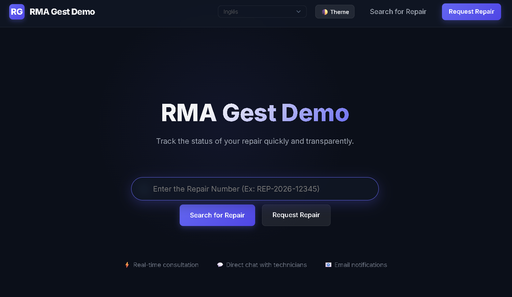
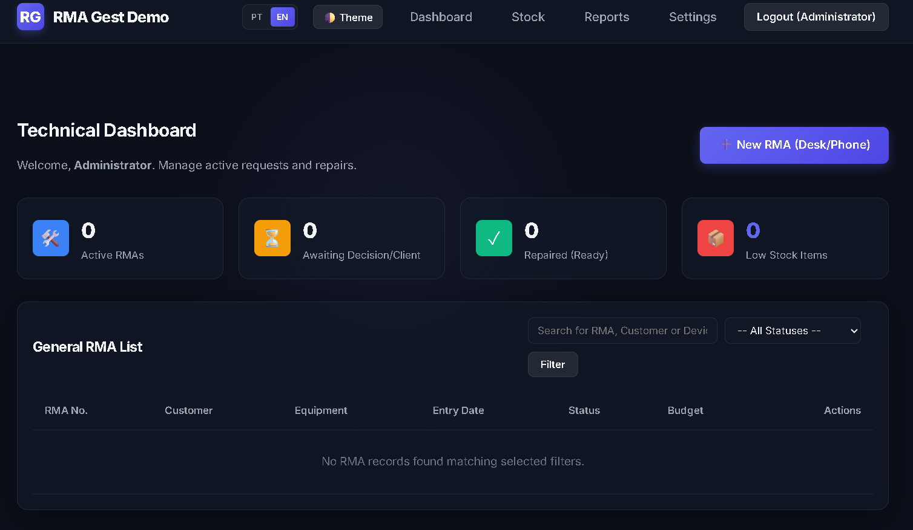

Manual de Instalação e Utilização
Guia oficial do utilizador e instalador para o RMA Gest — Sistema de Gestão de Fichas de Reparação e RMA.
🛠️ 1. Requisitos do Sistema
Antes de iniciar a instalação, certifique-se de que o seu servidor cumpre os seguintes requisitos mínimos:
- Servidor Web: Apache, Nginx, IIS ou equivalente.
- Versão do PHP: PHP 7.4 ou superior (Recomendado: PHP 8.x).
- Extensões do PHP Necessárias:
PDO(e o driver correspondente:pdo_sqlitee/oupdo_mysql)mbstring(para tratamento de caracteres especiais multibyte)openssl(para envio de emails seguros SMTP e integrações de API)curl(para comunicações com o gateway de WhatsApp)gd(para manipulação de imagens e logótipos)
- Base de Dados:
- SQLite (Recomendado): Extremamente prático. Guarda tudo de forma segura num único ficheiro local (
src/rmagest.sqlite). - MySQL / MariaDB: Ideal para maior escalabilidade ou ligações em rede estáveis.
- SQLite (Recomendado): Extremamente prático. Guarda tudo de forma segura num único ficheiro local (
🚀 2. Guia de Instalação e Configuração
Existem dois caminhos possíveis para instalar e executar o RMA Gest: através da versão portátil (Windows) ou num servidor web próprio.
Opção A: Instalação Portátil (Windows - Recomendado para Testes/Uso Local)
A aplicação já traz um servidor PHP integrado pré-configurado com suporte a SQLite, sem necessidade de instalar bases de dados adicionais.
- Aceda à pasta
RMAGestdescompactada. - Dê duplo clique no ficheiro **
Iniciar - Start.bat**. Uma janela da consola irá abrir e o seu navegador de internet predefinido abrirá automaticamente emhttp://localhost:8080/. - Siga o instalador web guiado e selecione a base de dados SQLite (Recomendado) para concluir a configuração.
- Importante: Não feche a janela da consola enquanto estiver a usar o site. Para parar o servidor de forma segura, feche a consola ou dê duplo clique em
Parar - Stop.bat.
Opção B: Instalação num Servidor Web Próprio (Custom/Produção)
Se prefere alojar o RMA Gest no seu próprio servidor (como um servidor Linux, alojamento partilhado cPanel, ou localmente usando XAMPP/WAMP/Laragon):
- Copiar os Ficheiros: Copie todo o conteúdo da pasta
wwwpara a diretoria pública do seu servidor (ex:/var/www/html/em Linux,public_html/em cPanel, ouhtdocs/no XAMPP). - Acesso pelo Navegador: Aceda ao endereço do seu servidor pelo navegador (ex:
http://o-seu-dominio.com/ouhttp://localhost/). - Instalador Guiado: O sistema identificará a falta do ficheiro
config.phpe redirecionará para o assistente web guiado (install.php). - Base de Dados:
- Se usar SQLite (Recomendado): Escolha SQLite no instalador. O ficheiro será criado em
src/rmagest.sqlite. Certifique-se de que a pastasrctem permissões de escrita (ex:chmod 775ou777em Linux) para que o PHP possa ler e gravar a base de dados. - Se usar MySQL/MariaDB: Crie uma base de dados limpa e introduza os dados de ligação no instalador (Host, Porta, Utilizador, Senha e Nome da Base de Dados).
- Se usar SQLite (Recomendado): Escolha SQLite no instalador. O ficheiro será criado em
- Configurações Finais: Complete os dados da empresa, logótipo, SMTP de email e a conta do administrador. O instalador gerará o ficheiro
config.phpna raiz.
👥 3. Utilização: Área do Cliente (Portal Público)
O portal público foi projetado para que o cliente interaja diretamente com a oficina técnica de forma intuitiva.

Funcionalidades Disponíveis:
- Pesquisa Rápida por Código: O cliente introduz o número do seu bilhete de reparação (ex:
REP-2026-00001) na barra de pesquisa estilo Google para ver de imediato a evolução do estado do equipamento. - Solicitação de Reparação (RMA Online): O cliente preenche uma ficha com as suas informações de contacto, descreve o problema do aparelho e pode tirar e anexar uma fotografia do estado físico da entrega.
- Acompanhamento em Tempo Real: A linha de tempo apresenta as fases (Em análise, Em Diagnóstico, Reparado, etc.).
- Visualização de Orçamento: O cliente visualiza a estimativa de custos e o estado de pagamento (Pendente ou Pago).
- Conversação com o Técnico: Inserindo o código de acesso secreto de 6 dígitos enviado por email/WhatsApp, o cliente desbloqueia um chat bidirecional em tempo real com o laboratório para responder a orçamentos ou partilhar informações adicionais.
🛠️ 4. Utilização: Área Técnica (Painel do Técnico)
Aceda a index.php?route=tech/login com as suas credenciais para aceder ao sistema de gestão de oficina.

4.1. O Painel de Controlo (Dashboard)
Fornece indicadores gerais de gestão em tempo real:
- Indicadores Rápidos (KPIs): Total de reparações em progresso, equipamentos parados a aguardar decisão do cliente, reparações prontas a entregar e alertas de stock baixo.
- Pesquisa Geral e Filtros: Pesquise fichas de reparação por código de RMA, nome de cliente ou modelo de equipamento e filtre por estado específico.
4.2. Gestão de Fichas de Reparação (RMA)
Ao abrir um processo de RMA, o técnico tem acesso às seguintes ações:
- Atualizar Estado & Notificar: Ao mudar o estado da reparação e inserir um comentário explicativo, o sistema envia automaticamente um email ou WhatsApp ao cliente com o progresso.
- Relatórios Privados: Notas técnicas de laboratório visíveis apenas pelos funcionários.
- Controlo de Peças Utilizadas: Adicione peças na reparação. O técnico pode deduzir os itens do inventário geral de stock da oficina ou escrever as peças manualmente (definindo preço e quantidade). O valor total é somado ao orçamento de forma automática.
- Impressão de Fichas: Imprima o relatório de suporte técnico para anexar fisicamente ao equipamento ou entregar no levantamento.
- Chat Integrado: Canal direto de contacto com o cliente que permite anexar fotografias de componentes danificados.
- RGPD (Esquecer Cliente): Apaga permanentemente e de forma irreversível os dados pessoais do cliente em cumprimento com o regulamento de privacidade, mantendo apenas a faturação.
4.3. Controlo de Stock (Inventário)
Controle as peças de substituição de laboratório (ex: Ecrãs, Baterias, SSDs):
- Registo de peças com referência SKU, quantidade atual e preço de venda.
- Alerta visual automático quando a quantidade desce abaixo do limiar de segurança.
4.4. Relatórios e Estatísticas
Geração de relatórios por intervalo de datas para analisar faturação estimada, valores faturados cobrados e valores de orçamentos pendentes.
⚙️ 5. Definições Globais do Sistema
Reservado a administradores, permite personalizar o funcionamento global da aplicação:
- Definições Gerais: Nome da oficina, logótipo da empresa e favicon do navegador.
- Servidor de Email (SMTP): Configurações para envio automático de notificações.
- Workflow de Estados: Adicione, reordene ou apague estados do fluxo de reparação exibido na timeline do cliente.
- Tipos de Dispositivo: Categorias de aparelhos aceites no laboratório.
- Utilizadores e Permissões: Crie novos técnicos e defina as suas permissões específicas (acesso a definições, stock, eliminação de RMAs, relatórios, etc.).
- Integração de WhatsApp: Configure o endpoint da sua API Gateway de WhatsApp, defina o token de acesso e envie payloads em JSON parametrizados com
{phone}e{message}. - Modelos de Mensagem: Edite os textos predefinidos de notificações de Email e WhatsApp (novos pedidos, atualizações de estado, mensagens de chat) com o suporte a placeholders como
{client_name},{rma_number}, etc. - Código de Integração (Widget): Construtor visual de um painel de pesquisa externo. Copie o código gerado em HTML/CSS para colocar no site institucional da sua empresa, permitindo que os clientes pesquisem as reparações diretamente a partir da sua página principal.
- Form Builder (Editor de Formulário): Desenhe um formulário de solicitação de reparação personalizado, com arrastar e soltar de novos campos, adaptando a recolha de dados ao seu modelo de negócio.
Installation & Usage Manual
Official user and installer guide for RMA Gest — Repair Ticket and RMA Management System.
🛠️ 1. System Requirements
Before proceeding with the installation, make sure your server meets the following minimum requirements:
- Web Server: Apache, Nginx, IIS, or equivalent.
- PHP Version: PHP 7.4 or higher (Recommended: PHP 8.x).
- Required PHP Extensions:
PDO(along with the corresponding driver:pdo_sqliteand/orpdo_mysql)mbstring(for multibyte string handling)openssl(for secure SMTP emails and API communications)curl(for WhatsApp API gateway integrations)gd(for logo and image processing)
- Database Engine:
- SQLite (Recommended): Highly convenient. Stores all database tables locally inside a single secure file (
src/rmagest.sqlite). - MySQL / MariaDB: Ideal for stable local area networks or shared cloud hosting servers.
- SQLite (Recommended): Highly convenient. Stores all database tables locally inside a single secure file (
🚀 2. Installation and Configuration Guide
There are two possible paths to install and run RMA Gest: via the portable version (Windows) or on your own web server.
Option A: Portable Installation (Windows - Recommended for Local/Testing Use)
The application already includes a pre-configured integrated PHP web server with SQLite database drivers. No extra installation is required.
- Access the
RMAGestfolder. - Double-click the
Iniciar - Start.batfile. A console window will open, and your default web browser will automatically openhttp://localhost:8080/. - Follow the guided web installer and select the SQLite (Recommended) database engine to complete the setup in seconds.
- Important: Do not close the console window while using the application. To stop the server safely, close the console window or double-click
Parar - Stop.bat.
Option B: Installing on Your Own Web Server (Custom/Production)
If you prefer to host RMA Gest on your own environment (e.g. Linux cloud server, shared cPanel hosting, or locally using XAMPP/WAMP/Laragon):
- Copy the Files: Copy all contents of the
wwwfolder to your web server's public directory (e.g.,/var/www/html/on Linux,public_html/on cPanel, orhtdocs/in XAMPP). - Access via Browser: Navigate to your server's URL in your web browser (e.g.,
http://your-domain.com/orhttp://localhost/). - Guided Installer: The system will detect the missing
config.phpfile and redirect you to the guided web installer (install.php). - Database Setup:
- If using SQLite (Recommended): Select SQLite in the installer. The database file will be created at
src/rmagest.sqlite. Ensure that thesrcdirectory has **write permissions** (e.g.,chmod 775or777on Linux) so PHP can read and write to the local database file. - If using MySQL/MariaDB: Create a clean database in your hosting panel (e.g. phpMyAdmin) and enter the connection details (Host, Port, User, Password, and Database Name) in the installer.
- If using SQLite (Recommended): Select SQLite in the installer. The database file will be created at
- Final Configurations: Complete the company details, upload your logo, configure SMTP mail settings, and create your administrator account. The installer will generate the
config.phpfile automatically.
👥 3. Client Area (Public Portal)
The public portal allows customers to interact directly with the repair shop in an intuitive way.
Available Features:
- Search Repair by Code: Customers enter their tracking code (e.g.
REP-2026-00001) in the Google-style search bar to instantly see their device's current stage. - Online Repair Request (RMA Form): Customers fill out their contact details, describe the device symptoms, and optionally upload a photograph of the physical condition.
- Real-Time Tracking: An interactive timeline displays the repair progress (Under analysis, Under Diagnostics, Repaired, etc.).
- Budget View: Clients can see the estimated cost and the budget status (Pending Decision or Paid/Approved).
- Conversational Support: By entering the unique 6-digit access code sent to their email or WhatsApp, the client unlocks a secure chat with the technician to discuss budgets or upload files.
🛠️ 4. Technical Area (Technician Panel)
Navigate to index.php?route=tech/login and authenticate using your credentials to access the laboratory dashboard.
4.1. Dashboard Overview
Provides critical indicators in real-time:
- Quick KPIs: Count of active tickets in progress, tickets on hold waiting for client decision, repaired devices ready for pick-up, and inventory items with low stock.
- Advanced Filtering: Search repair sheets by RMA code, customer name, or device, and filter by statuses.
4.2. RMA Sheet Management
Opening any RMA ticket from the list provides the following tools:
- Update Status & Notify: When changing the status of a repair and adding a public comment, the system automatically dispatches an email or WhatsApp notification to the client.
- Private Diagnostic Notes: Write internal laboratory logs visible only to technical staff.
- Parts and Inventory Deductions: Add parts used during the repair. You can deduct parts directly from the global workshop stock or input them manually (setting quantity and price). The total cost updates automatically.
- Assistance Reports: Print a complete technical ticket to attach physically to the device or hand over to the customer.
- Direct Chat Feed: Real-time conversation channel to negotiate budgets and send pictures of damaged hardware.
- GDPR "Forget Customer": Permanently and irreversibly wipes the customer's personal data from the repair sheet to comply with privacy rules, retaining only the billing details.
4.3. Stock Control (Inventory)
Manage spare parts and workshop consumables (e.g. LCD Screens, Batteries, Solid State Drives):
- Register stock items with SKU references, available quantity, and sale unit prices.
- Triggers visual warnings when quantities fall below safety thresholds.
4.4. Reports & Statistics
Filter data by date ranges to analyze estimated invoice volumes, total billed (paid), and total pending budgets.
⚙️ 5. Global System Settings
Reserved for administrators to customize the core settings of the application:
- General: Workshop name, company logo image, and browser tab favicon.
- Email Settings (SMTP): Server settings for automated notifications.
- Workflow Statuses: Add, reorder, or delete custom steps displayed on the client's timeline.
- Device Types: Categories of equipment accepted in the laboratory.
- Users & Permissions: Add technical users and configure granular permissions (access to settings, inventory, reports, deleting tickets, etc.).
- WhatsApp Integrations: Configure your WhatsApp Gateway API endpoint, define auth tokens, and customize JSON payloads using
{phone}and{message}variables. - Message Templates: Customize notifications triggered by key events (new ticket submit, status update, chat message) with support for placeholders like
{client_name},{rma_number}, etc. - Integration Code (Widget Generator): A visual builder to generate external search boxes. Copy the generated HTML/CSS block to place it on your corporate website, allowing customers to query their repair status directly from your homepage.
- Form Builder: Customize the public repair request form using a drag-and-drop interface, tailoring the collected data to your business model.